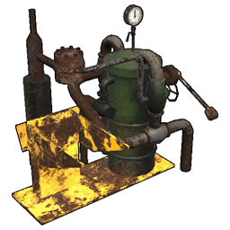
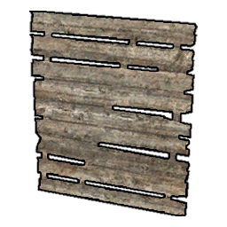
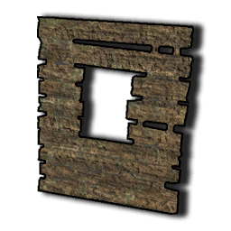

Piece list
All of the pieces currently in the game. This file is automatically generated from Sunkenland 0.5.12 using the SunkenDoc mod found on our GitHub.
Building List
| Piece | Building ID | Name | Description | Resources required |
|---|---|---|---|---|
BirdTrap |
2 | Bird Trap | Using plant seeds to lure seabirds and obtain bird meat |
|
| D1_Gridiron |
3 | Simple Grill | Cooks raw foods for more nutrition. |
|
D3_Simple Purifier |
4 | Simple Purifier | Use of wood, distillation of sea water to obtain fresh water. |
|
F1_Stove |
5 | Stove | It can be used to cook a more nutritious meal and has a short gain effect when consumed. |
|
G1_Fishnet |
6 | Fishnet | Put in a bait and harvest a sea fish. |
|
| G2_Planter |
7 | Planter | Used for planting various types of fruits, vegetables, and shrubs. |
|
Underwater Planting Pot |
279 | Underwater Planting Pot | A structure used to grow underwater plants, such as certain algae. |
|
D2_Improved Gridiron |
8 | Improved Grill | Faster cooking, saving wood, more charcoal. |
|
D4_Advanced Purifier |
9 | Advanced Purifier | Pumps and distills seawater, accelerates purification. |
|
Big Fish Basket |
1 | Big Fish Basket | Fully automatic capture of fish without the need for bait |
|
Fish Tank |
10 | Fish Tank | A beautiful glass aquarium |
|
| Fishpond |
280 | Fishpond | Artificial fish ponds filled with seawater to raise marine fish. The fish fry will hit up with the seawater, don't worry! |
|
A1_Research Table |
11 | Research Table | Used to unlock more constructible items and base facilities. |
|
| AirFillingStation  |
12 | Air Filling Station | Manually refills your air tanks. |
|
| AutomaticFirearmsRecoveryStation |
13 | Advanced Firearms Workshop | Energized and working, the manufacturing platform used to make modern firearms. |
|
| B1_Furnace |
14 | Furnace | Using wood as a fuel, it can be used to smelt ore into metal ingots. |
|
B2_Avil |
15 | Anvil | Used for manufacturing or repairing advanced metal weapons. |
|
Battery Charger |
16 | Battery Charger | Used to charge batteries. Requires power source. |
|
C1_Gun Workshop |
223 | Black Powder Gun Workshop | Used for making black powder firearms and their ammunition. |
|
C2_Ammo Workshop |
18 | Ammo Workshop | Needs to be electrified and used as a working platform for making modern ammunition. |
|
C3_Armor Workshop |
19 | Armor Workshop | Used for crafting modern helmets and bulletproof vests. |
|
C4_Heavy Workshop |
282 | Heavy Machinery Workbench | An electrically powered workbench used to produce heavy equipment such as engines, superchargers and turbines. |
|
C8_Sawmill |
21 | Sawmill | Work with electricity to process ordinary wooden boards into exquisite wooden boards. |
|
C9 Decompose Table |
22 | Recycler | Drag unused items into it to dismantle and obtain partial raw materials. |
|
Electrolytic Furnace |
23 | Electrolytic Furnace | Energized to work, converting iron ore, copper ore, anatase, etc. into materials for synthesis. |
|
H_Biofuel Lab |
24 | Biofuel Lab | Fuel is made from a variety of organic materials. |
|
Inventory Management Robot |
283 | Inventory Management Robot | Power up and use, deposit the item into the machine and it can be automatically dispensed into a storage container that already holds the item. |
|
RepairStation |
26 | Repair Station | Repair equipment that has lost its durability. |
|
Steel Furnace |
27 | Steel Furnace | Use charcoal as a fuel to melt iron into bits of steel. |
|
B2_Reinforced Foundation |
30 | Reinforced Foundation | The foundation of base construction. |
|
G1_Glass Wall |
45 | Glass Wall | Can only be built on foundations and floors. |
|
G1_Reinforced Wall |
46 | Reinforced Wall | Can only be built on foundations and floors. |
|
G2_Reinforced Wall With Door |
47 | Reinforced Wall With Door | Can only be built on foundations and floors. |
|
G3_Reinforced Wall With Window |
48 | Reinforced Wall With Window | Can only be built on foundations and floors. |
|
G4_Reinforced Door |
49 | Reinforced Door | Can be attached to door frames. |
|
G5_Reinforced Window |
50 | Reinforced Window | Can be attached to window frames. |
|
L-shaped Reinforced Roof |
66 | L-shaped Reinforced Roof | Can only be built on pillars. |
|
One-quarter Reinforced Triangular Wall |
111 | One-quarter Reinforced Triangular Wall | Can only be built on foundations and floors. |
|
Reinforced Door 45 |
113 | Reinforced Door 45° | Can only be built on foundations and floors. |
|
Reinforced Floor |
76 | Reinforced Floor | Can only be built on pillars. |
|
Reinforced Floor Hole |
75 | Reinforced Floor Hole | Can only be built on pillars. |
|
Reinforced Half Floor |
77 | Reinforced Half Floor | Can only be built on pillars. |
|
Reinforced Half Foundation |
226 | Reinforced Half Foundation | The foundation of base construction. |
|
Reinforced Half Wall |
117 | Reinforced Half Wall | Can only be built on foundations and floors. |
|
Reinforced Half Wall 45 |
114 | Reinforced Half Wall 45° | Can only be built on foundations and floors. |
|
Reinforced Half Wall Inverted Triangle |
115 | Reinforced Half Wall Inverted Triangle | Can only be built on foundations and floors. |
|
Reinforced Half Wall Triangle |
116 | Reinforced Half Wall Triangle | Can only be built on foundations and floors. |
|
Reinforced Roof 60 |
78 | Reinforced Roof 60° | Can only be built on pillars. |
|
Reinforced Roof Herringbone |
79 | Reinforced Roof Herringbone | Can only be built on pillars. |
|
Reinforced Roof Outside 60 |
80 | Reinforced Roof Outside 60° | Can only be built on pillars. |
|
Reinforced Roof Triangle 60 |
81 | Reinforced Roof Triangle 60° | Can only be built on pillars. |
|
Reinforced Roof Within 60 |
82 | Reinforced Roof Within 60° | Can only be built on pillars. |
|
Reinforced Wall 45 |
118 | Reinforced Wall 45° | Can only be built on foundations and floors. |
|
Reinforced Window 45 |
119 | Reinforced Window 45° | Can only be built on foundations and floors. |
|
Sealed Reinforced Roof |
84 | Sealed Reinforced Roof | Can only be built on pillars. |
|
T-shaped Reinforced Roof |
87 | T-shaped Reinforced Roof | Can only be built on pillars. |
|
Tapered Reinforced Roof |
90 | Tapered Reinforced Roof | Can only be built on pillars. |
|
X-shaped Reinforced Roof |
101 | X-shaped Reinforced Roof | Can only be built on pillars. |
|
A2_Metal Foundation |
29 | Metal Foundation | The foundation of base construction. |
|
F1_Metal Wall |
39 | Metal Wall | Can only be built on foundations and floors. |
|
F2_Metal Wall WIth Door |
40 | Metal Wall With Door | Can only be built on foundations and floors. |
|
F3_Metal Wall With Window |
41 | Metal Wall With Window | Can only be built on foundations and floors. |
|
F4_Metal Floor |
42 | Metal Floor | Can only be built on pillars. |
|
F5_Metal Door |
43 | Metal Door | Can be attached to door frames. |
|
F6_Metal Window |
44 | Metal Window | Can be attached to window frames. |
|
Glass Wall 45 |
225 | Glass Wall 45° | Can only be built on foundations and floors. |
|
H4_Metal Column |
51 | Metal Column | Used to support upper structures. |
|
Half Metal Stairs |
52 | Half Metal Stairs | A short half staircase that can be freely pieced together. |
|
J3_Metal Stairs |
56 | Metal Stairs | Can be attached to foundations and floors. |
|
J4_Metal Ledder |
57 | Metal Ladder | Can be attached to foundations and floors. |
|
K2_Metal Roof |
59 | Metal Roof | Can only be built on pillars. |
|
L-shaped Metal Roof |
65 | L-shaped Metal Roof | Can only be built on pillars. |
|
Metal Door 45 |
103 | Metal Door 45° | Can only be built on foundations and floors. |
|
Metal Floor Hole |
68 | Metal Floor Hole | Can only be built on pillars. |
|
Metal Half Floor |
69 | Metal Half Floor | Can only be built on pillars. |
|
Metal Half Foundation |
224 | Metal Half Foundation | The foundation of base construction. |
|
Metal Half Wall |
107 | Metal Half Wall | Can only be built on foundations and floors. |
|
Metal Half Wall 45 |
104 | Metal Half Wall 45° | Can only be built on foundations and floors. |
|
Metal Half Wall Inverted Triangle |
105 | Metal Half Wall Inverted Triangle | Can only be built on foundations and floors. |
|
Metal Half Wall Triangle |
106 | Metal Half Wall Triangle | Can only be built on foundations and floors. |
|
Metal Roof 60 |
70 | Metal Roof 60° | Can only be built on pillars. |
|
Metal Roof Herringbone |
71 | Metal Roof Herringbone | Can only be built on pillars. |
|
Metal Roof Outside 60 |
72 | Metal Roof Outside 60° | Can only be built on pillars. |
|
Metal Roof Triangle 60 |
73 | Metal Roof Triangle 60° | Can only be built on pillars. |
|
Metal Roof Within 60 |
74 | Metal Roof Within 60° | Can only be built on pillars. |
|
Metal Wall 45 |
108 | Metal Wall 45° | Can only be built on foundations and floors. |
|
Metal Window 45 |
109 | Metal Window 45° | Can only be built on foundations and floors. |
|
One-quarter Metal Triangular Wall |
110 | One-quarter Metal Triangular Wall | Can only be built on foundations and floors. |
|
Sealed Metal Roof |
83 | Sealed Metal Roof | Can only be built on pillars. |
|
T-shaped Metal Roof |
86 | T-shaped Metal Roof | Can only be built on pillars. |
|
Tapered Metal Roof |
89 | Tapered Metal Roof | Can only be built on pillars. |
|
X-shaped Metal Roof |
100 | X-shaped Metal Roof | Can only be built on pillars. |
|
Floor Tile Half(European).png) |
229 | Floor Tile Half (European) | Can be attached to foundations and floors. |
|
Floor Tile Half(White Tiles).png) |
230 | Floor Tile Half (White Tiles) | Can be attached to foundations and floors. |
|
Floor Tile Half(Wooden).png) |
231 | Floor Tile Half (Wooden) | Can be attached to foundations and floors. |
|
K1_Wallpaper (Blue).png) |
58 | Wallpaper (Blue) | Can be built on any wall. |
|
K2_Wallpaper (Green).png) |
60 | Wallpaper (Green) | Can be built on any wall. |
|
K3_Wallpaper (Yellow).png) |
61 | Wallpaper (Yellow) | Can be built on any wall. |
|
L1_Floor Tile (European).png) |
62 | Floor Tile (European) | Can be attached to foundations and floors. |
|
L2_Floor Tile (White Tiles).png) |
63 | Floor Tile (White Tiles) | Can be attached to foundations and floors. |
|
L3_Floor Tile (Wooden).png) |
64 | Floor Tile (Wooden) | Can be attached to foundations and floors. |
|
Wallpaper Half Wall Triangle (Blue).png) |
247 | Wallpaper Half Wall Triangle (Blue) | Can be attached to foundations and floors. |
|
Wallpaper Half Wall Triangle (Green).png) |
248 | Wallpaper Half Wall Triangle (Green) | Can be attached to foundations and floors. |
|
Wallpaper Half Wall Triangle (Yellow).png) |
249 | Wallpaper Half Wall Triangle (Yellow) | Can be attached to foundations and floors. |
|
Wallpaper 45 (Blue).png) |
232 | Wallpaper 45° (Blue) | Can be built on any wall. |
|
Wallpaper 45 (Green).png) |
233 | Wallpaper 45° (Green) | Can be built on any wall. |
|
Wallpaper 45 (Yellow).png) |
234 | Wallpaper 45° (Yellow) | Can be built on any wall. |
|
Wallpaper Door (Yellow).png) |
253 | Wallpaper Door (Yellow) | Can be built on any door. |
|
Wallpaper Door (Blue).png) |
254 | Wallpaper Door (Blue) | Can be built on any door. |
|
Wallpaper Door (Green).png) |
255 | Wallpaper Door (Green) | Can be built on any door. |
|
Wallpaper Door 45 (Blue).png) |
235 | Wallpaper 45° (Blue) | Can be built on any wall. |
|
Wallpaper Door 45 (Green).png) |
236 | Wallpaper 45° (Green) | Can be built on any wall. |
|
Wallpaper Door 45 (Yellow).png) |
237 | Wallpaper 45° (Yellow) | Can be built on any wall. |
|
Wallpaper Half (Blue).png) |
238 | Wallpaper Half (Blue) | Can be built on any wall. |
|
Wallpaper Half (Green).png) |
239 | Wallpaper Half (Green) | Can be built on any wall. |
|
Wallpaper Half (Yellow).png) |
240 | Wallpaper Half (Yellow) | Can be built on any wall. |
|
Wallpaper Half Wall 45 (Blue).png) |
241 | Wallpaper Half Wall 45° (Blue) | Can be built on any wall. |
|
Wallpaper Half Wall 45 (Green).png) |
242 | Wallpaper Half Wall 45° (Green) | Can be built on any wall. |
|
Wallpaper Half Wall 45 (Yellow).png) |
243 | Wallpaper Half Wall 45°(Yellow) | Can be built on any wall. |
|
Wallpaper One-quarter Triangular Wall (Blue).png) |
250 | Wallpaper One-Quarter Triangular Wall (Blue) | Can be attached to foundations and floors. |
|
Wallpaper One-quarter Triangular Wall (Green).png) |
251 | Wallpaper One-Quarter Triangular Wall (Green) | Can be attached to foundations and floors. |
|
Wallpaper One-quarter Triangular Wall (Yellow).png) |
252 | Wallpaper One-Quarter Triangular Wall (Yellow) | Can be attached to foundations and floors. |
|
Wallpaper Window (Blue).png) |
256 | Wallpaper Window (Blue) | Can be built on any window. |
|
Wallpaper Window (Green).png) |
257 | Wallpaper Window (Green) | Can be built on any window. |
|
Wallpaper Window (Yellow).png) |
258 | Wallpaper Window (Yellow) | Can be built on any window. |
|
Wallpaper Window 45 (Blue).png) |
244 | Wallpaper 45° (Blue) | Can be built on any wall. |
|
Wallpaper Window 45 (Green).png) |
245 | Wallpaper 45° (Green) | Can be built on any wall. |
|
Wallpaper Window 45 (Yellow).png) |
246 | Wallpaper 45° (Yellow) | Can be built on any wall. |
|
Wallpaper With Door |
129 | Wallpaper (Blue) | Can be built on any wall. |
|
Wallpaper With Door_1 |
130 | Wallpaper (Green) | Can be built on any wall. |
|
Wallpaper With Door_2 |
131 | Wallpaper (Yellow) | Can be built on any wall. |
|
Wallpaper With Window |
132 | Wallpaper (Blue) | Can be built on any wall. |
|
Wallpaper With Window_1 |
133 | Wallpaper (Green) | Can be built on any wall. |
|
Wallpaper With Window_2 |
134 | Wallpaper (Yellow) | Can be built on any wall. |
|
A1_Wooden Foundation |
28 | Wooden Foundation | The foundation of base construction. |
|
| E1_WoodenWall  |
31 | Wooden Wall | Can only be built on foundations and floors. |
|
E2_WoodenWallWithDoorSlot |
32 | Wooden Wall With Door Slot | Can only be built on foundations and floors. |
|
| E3_WoodenWallWithWindow  |
33 | Wooden Wall With Window | Can only be built on foundations and floors. |
|
E4_Wooden Floor |
34 | Wooden Floor | Can only be built on pillars. |
|
E5_Wooden Column |
35 | Wooden Pillar | Used to support upper structures. |
|
E6_Wooden Roof |
36 | Wooden Roof | Can only be built on pillars. |
|
E7_WoodenDoor |
37 | Wooden Door | Can be attached to door frames. |
|
E8_WoodenWindow |
38 | Wooden Window | Can be attached to window frames. |
|
Half Wooden Stairs |
53 | Half Wooden Stairs | A short half staircase that can be freely pieced together. |
|
J1_Wooden Stairs |
54 | Wooden Stairs | Can be attached to foundations and floors. |
|
J2_Wooden Ladder |
55 | Wooden Ladder | Can be attached to foundations and floors. |
|
L-shaped Wooden Roof |
67 | L-shaped Wooden Roof | Can only be built on pillars. |
|
One-quarter Wooden Triangular Wall |
112 | One-quarter Wooden Triangular Wall | Can only be built on foundations and floors. |
|
Sealed Wooden Roof |
85 | Sealed Wooden Roof | Can only be built on pillars. |
|
T-shaped Wooden Roof |
88 | T-shaped Wooden Roof | Can only be built on pillars. |
|
Tapered Wooden Roof |
91 | Tapered Wooden Roof | Can only be built on pillars. |
|
Wooden Door 45 |
120 | Wooden Door 45° | Can only be built on foundations and floors. |
|
Wooden Floor Hole |
92 | Wooden Floor Hole | Can only be built on pillars. |
|
Wooden Half Floor |
93 | Wooden Half Floor | Can only be built on pillars. |
|
Wooden Half Foundation |
227 | Wooden Half Foundation | The foundation of base construction. |
|
Wooden Half Wall |
126 | Wooden Half Wall | Can only be built on foundations and floors. |
|
Wooden Half Wall 45 |
121 | Wooden Half Wall 45° | Can only be built on foundations and floors. |
|
Wooden Half Wall Inverted Triangle |
122 | Wooden Half Wall Inverted Triangle | Can only be built on foundations and floors. |
|
Wooden Half Wall Triangle |
123 | Wooden Half Wall Triangle | Can only be built on foundations and floors. |
|
Wooden Half Wall With Window |
125 | Wooden Half Wall With Window | Can only be built on foundations and floors. |
|
Wooden Half Wall With Window 45 |
124 | Wooden Half Wall With Window 45° | Can only be built on foundations and floors. |
|
Wooden Roof 60 |
94 | Wooden Roof 60° | Can only be built on pillars. |
|
Wooden Roof Herringbone |
95 | Wooden Roof Herringbone | Can only be built on pillars. |
|
Wooden Roof Outside 60 |
96 | Wooden Roof Outside 60° | Can only be built on pillars. |
|
Wooden Roof Triangle 60 |
97 | Wooden Roof Triangle 60° | Can only be built on pillars. |
|
Wooden Roof With Window 60 |
98 | Wooden Roof With Window 60° | Can only be built on pillars. |
|
Wooden Roof Within 60 |
99 | Wooden Roof Within 60° | Can only be built on pillars. |
|
Wooden Wall 45 |
127 | Wooden Wall 45° | Can only be built on foundations and floors. |
|
Wooden Window 45 |
128 | Wooden Window 45° | Can only be built on foundations and floors. |
|
X-shaped Wooden Roof |
102 | X-shaped Wooden Roof | Can only be built on pillars. |
|
A1_Wooden Defensive Wall |
135 | Wooden Defensive Wall | Wooden defensive wall that can be used to enclose your base. |
|
A2_Wooden Gate |
136 | Wooden Gate | Wooden door that can be opened and closed. |
|
AP Mine |
272 | AP Mine | Powerful anti-personnel mines. |
|
Artillery |
273 | Artillery | Launches homemade projectiles, causing widespread damage to invading enemies. |
|
Auto Turret |
277 | Automatic machine gun turret | Electrically powered for use and automatically shoots incoming enemies. |
|
B1_Metal Defensive Wall |
137 | Metal Defensive Wall | Even sturdier defensive wall. |
|
B2_Metal Gate |
138 | Metal Gate | Even sturdier metal door that can be opened and closed. |
|
BarbedTip |
281 | Ground thorns | Placed on the ground, it deals damage to enemies standing on it. |
|
C1_Wooden Barricade |
139 | Wooden Barricade | Simple barricade that can obstruct invaders. |
|
C2_Barbed Wire |
140 | Barbed Wire | Simple barricade that can obstruct invaders. |
|
D1_Barricade |
141 | Barricade | Simple wooden cover that can be crouched behind for shooting. |
|
D2_Reinforced Barricade |
142 | Reinforced Barricade | Sturdy metal cover that can withstand gunfire, providing you with maximum protection. |
|
E1_Metal Armor Plate |
143 | Metal Armor Plate | Small armor plates that can be attached anywhere to reinforce and provide protection. |
|
E1_Tire Stack |
144 | Tire Stack | A pile of discarded tires for creating makeshift cover. |
|
F1_Heavy Machine Gun |
145 | Heavy Machine Gun | Stationary heavy weapon that can rotate. Uses large caliber ammunition. |
|
G1_Siren |
146 | Siren | A high pitch alarm system. |
|